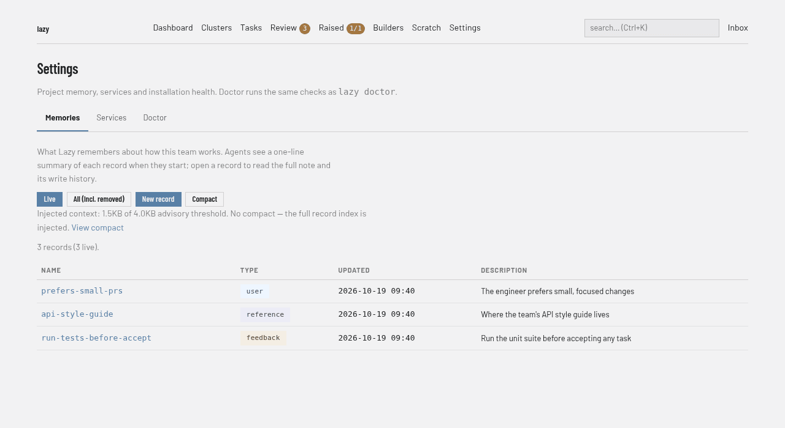

Shared memory
Lazy owns a shared memory store: many small, named records of curated, cross-task knowledge — who the user is, guidance they gave and why, project constraints that aren't derivable from the code, and pointers to external resources.
A compact index of every record (one line each: name, type, description) is
auto-injected into builder and agent launches. Bodies are read on demand.
Once the store grows, lazy memory compact replaces that index with a smaller
derived summary — see Compaction.
In the browser

The daemon's web UI serves the same store under Settings → Memories (the
dashboard's address is printed by lazy daemon status):
/settings/memory— the live index, one row per record.?all=1includes removed records (tombstones; the write history is kept)./memoryredirects here./memory/newand/memory/<name>— create, read, and edit a record. These are the same writes aslazy memory save/lazy memory rm: a human surface, so they may write. Task agents stay read-only./memory/compact— the current compact (exactly the derived summary injected into launches), its size against[memory] warn_bytes, and whether any records have been written or removed since it. Run compact uses the same modes aslazy memory compact(auto, mechanical, llm) and streams progress so a model call is never a silent wait. Clearing the compact is always safe: injection falls back to the full index.
The pages work with JavaScript turned off. Lazy Teams offers the same pages under a project's Settings → Memory tab — list, read, create, edit, remove, and run or clear the compact, with the same size figures and the same list of records the compact does not cover — writing to the same store, so it reads the same either way. Any team member can write there; people viewing as someone else cannot.
Every write names who made it. The record page and its write history show the
person — on a laptop, the git identity the daemon runs with; in Lazy Teams, the
signed-in member — and fall back to the role (human) for older records.
In Lazy Teams, an Auto or LLM compact runs a model on the Claude account of the member who pressed Run compact, and is refused if they have not connected one; Mechanical runs no model and needs no account. The page shows each step while the compact runs.
lazy memory list # the index
lazy memory show deploy-checklist # one record in full
lazy memory save <name> -t project -d "one line" # create or update
lazy memory rm <name> # tombstone (history preserved)
lazy memory history [<name>] # who wrote what, when
lazy memory compact # regenerate the injected summary
lazy search 'in:memories "credentials"' # search bodies
Why lazy owns this
Claude Code has its own memory feature that writes markdown files into the harness's memory directory. In lazy, that directory lives inside each builder's own projects directory. As a result that memory is:
- never shared between builders,
- cleaned up along with the builder's directory,
- invisible to agents and to other machines,
- outside lazy state entirely (not in storage, not searchable, not backed up).
Lazy memory replaces it: storage-backed, actor-attributed, searchable, and injected where it's
actually needed. Builder and agent prompts explicitly redirect from the harness
feature to lazy_memory_* — the harness feature cannot be disabled, so the
prompts tell the model not to use it.
When the index can't be read
A storage failure while building the index never blocks a launch. Instead the
memory section is replaced with an explicit marker — MEMORY INDEX UNAVAILABLE (<error>) — that tells the model records may exist and to retry on demand with
lazy_memory_recall / lazy_search, and the underlying error is logged loudly.
This is deliberately not the same as the empty-section case: rendering nothing
would say "this project has no recorded knowledge", turning an unreadable store
into apparent absence of knowledge. Every agent launch and the builder behave
identically here.
Compaction
Every record's index line is injected into every launch, so the injected context
grows with the store. lazy memory compact bounds it without touching the
records:
lazy memory compact # auto: LLM summary, mechanical fallback
lazy memory compact --mechanical # code-only; no model needed
lazy memory compact --llm # require the model path (fails if unavailable)
lazy memory compact --show # print the current compact and what it covers
lazy memory compact --clear # drop it; injection returns to the full index
lazy doctor # injected size vs the budget, staleness, remedy
A run prints what it is about to do before the model call — the record count, when the last compact was generated, which generator and model it will use — because an LLM round-trip is otherwise several silent seconds.
Five rules define the feature:
The compact is derived; records are never modified. Compaction reads the records and writes one separate, overwritable artifact. No description rewrites, no truncation, no deletions — curation-by-mutilation is exactly what this avoids.
lazy memory showis byte-identical before and after, and compaction records no write history because it is not a write to the records.Injection is the compact plus everything newer. A record created or updated after the compact was generated is injected as its live index line, and that line supersedes whatever the compact says about it. The watermark is the set of
name+revisionpairs the compact covered — a revision, not a timestamp, so it is immune to clock skew and a delete→revive cycle correctly reads as "new". A record removed since compaction is called out too ("Removed since that summary"), so a session never reads a stale summary claim as current.Recompaction always regenerates from the records, never from the previous compact. There is no compounding lossy compression: every generation is one summarization step away from the source of truth.
Size is a warning, never an error — and the diagnosis lives in
lazy doctor. Whenever the memory context is assembled (builder launch, agent launch), a context over[memory] warn_bytes(default 4096) logs one generic line — "Injected memory context is over the advisory size threshold. Runlazy doctorfor details." — and nothing more. Doctor is the single "check engine light" surface, so it owns the whole diagnosis: the actual size against the threshold, whether a compact exists and how stale it is (records written/removed since its watermark), and the remedy. The remedy is conditional:lazy memory compactwhen the compact is behind the records, otherwise curate the records or raisewarn_bytes— recommending a recompact of an already-current compact would send you in a circle. The builder's section also carries a short in-prompt pointer tolazy doctor(the builder can act on it; agents are read-only, so telling them would be noise); it carries no sizes or remedy of its own. Nothing is ever truncated and no launch is ever blocked.The size that is reported is measured on the section without that in-prompt note, so the number deciding "over threshold" is the same number doctor and
lazy memory compactquote.Compaction must never grow the injected context. Shrinking injection is the only thing compaction exists to do, so a candidate that would make it bigger is rejected: nothing is written, any existing compact stays in place and stays injected, and the command exits non-zero after printing both sizes and what actually helps. The comparison is made on the assembled body — the summary plus the compact's own explanatory preamble plus any newer records injected alongside it — versus that same body with no compact, since that is what a prompt really pays for. A consequence worth knowing: the preamble is a fixed cost, and one-line descriptions are already dense, so a small or already-tight store cannot be compacted below its plain index — mechanical compaction only starts paying for itself at roughly fifty-plus records. There the honest answer is rejection plus "curate the records, or raise
warn_bytes", not a compact that costs more than it saves.
Names stay referenceable: lazy_memory_recall(name=…) reads bodies on demand,
so a summary that failed to mention a record would orphan it. Any name the
LLM omits is appended verbatim as an index line and reported — repair, not
rejection.
Why LLM-first with a mechanical fallback
The index is already one line per record, so mechanical tightening can only
recover the repeated (type) token — real compression requires a reader that can
merge overlapping knowledge into themes. So the default (auto) asks a model,
and falls back to the mechanical generator — grouping by type, every name and
description verbatim, lossless — on any failure: no credential, offline mode,
a non-zero exit, empty output. Compaction is optional infrastructure; it must
never be the reason a project cannot compact its memory. The fallback reason is
always printed, never silent. Two extra guards: an LLM summary that would not
shrink the injected context is discarded in favor of the mechanical result, and
--llm (an explicit demand) fails loudly rather than quietly doing something
else — including here, where a non-shrinking LLM summary is rejected outright
instead of being silently replaced by a mechanical compact nobody asked for.
Seeing what is injected
lazy memory compact --show prints the artifact and its coverage: when it was
generated, by whom, which generator and model, how many records it covers, the
injected size both with it and without it, the summary text itself, and then the
catch-up picture — every record written or updated since the watermark (injected
as its live index line, superseding the summary) and every name removed since.
When nothing is outstanding it says so explicitly, so "is my newest memory
actually reaching sessions?" is answerable without launching anything.
Memory vs journal vs CLAUDE.md / AGENTS.md
| scope | injected into prompts? | who writes | |
|---|---|---|---|
| CLAUDE.md / AGENTS.md | how to work in this repo | read by the agent harness automatically | humans, in git |
Journal (lazy journal) |
one task | entry text, never — the agent's prompt gets a one-line count of new entries and reads them on demand | humans, builder, agents |
Memory (lazy memory) |
the project, across tasks | yes — the index, on every launch | humans, builder |
The journal is the raw per-task record ("chose K=3 because…", "stubbed retry"). Memory is curated cross-task knowledge that future sessions should start with. A journal entry that turns out to matter beyond its task is a candidate for a memory record — promoting it is a deliberate act, not automatic.
Record shape
| field | meaning |
|---|---|
name |
kebab-case slug; the record's identity. Saving an existing name supersedes it |
description |
one line — this is what the injected index shows (max 200 chars when you author it; see below) |
type |
user · feedback · project · reference |
body |
the actual knowledge (markdown) |
Types mirror the harness categories so imported records keep their meaning:
user— who the user is (role, expertise, preferences)feedback— guidance they've given about how to work, with the whyproject— goals and constraints not derivable from code or git historyreference— pointers to external resources (dashboards, tickets, docs)
The 200-character description limit is an authoring rule
lazy memory save and lazy_memory_save reject a description longer than 200
characters: when you're writing a record, keeping the injected line short is
free — put the detail in the body.
The import path does not enforce it. Harness records were written by another tool under another contract, so they are stored verbatim, however long their description is — never rejected, never truncated. Rejecting would discard the curated knowledge the import exists to rescue; truncating would mangle it. After an import, lazy prints a hint naming any records over the limit so you can tighten them at your leisure — curation is a separate act from intake.
Rendering adapts to the data rather than the data to the renderer: the index is one line per record, so a stored description's whitespace is collapsed at render time and long lines render in full.
The one exception is the lazy memory list table, where a long description
would wrap across terminal lines and make the table unscannable. There the
description column is elided with a trailing … to whatever width the terminal
leaves (piped output assumes 120 columns), and the footer says so when anything
was shortened. This is display only — nothing stored changes, nothing that feeds
injection is affected (the index renders descriptions in full, and a compact is
derived from the records, never from this table), and lazy memory show <name>
always prints the description verbatim.
Every write is attributed (human from the CLI, builder over MCP, system
for the import) and appended to an immutable history. lazy memory rm is a
tombstone: the record leaves the index, but its history survives, and a
later save under the same name revives it as a new revision.
Who can write: agents are read-only
Task agents cannot write memory. lazy_memory_save is rejected
server-side when the caller has a task id — the same ownership-gate mechanism
that confines agents to their own subtree, not prompt guidance.
The reason is a security boundary: memory records are injected into every future builder and agent session. An agent-writable shared store would be a prompt-injection channel into every session that follows — one compromised or confused agent could plant instructions that every later run reads as trusted project knowledge.
Agents still read freely:
lazy_memory_recall()— the index;lazy_memory_recall(name=…)— one recordlazy_search(query="in:memories <text>")— search bodies
If an agent learns something memory-worthy, it says so in its final summary and the human or builder decides.
MCP tools
| tool | builder | agent |
|---|---|---|
lazy_memory_save |
✅ | ❌ rejected server-side |
lazy_memory_recall |
✅ | ✅ |
lazy_search in:memories |
✅ | ✅ |
Importing existing harness memory
One-time migration from the Claude Code harness memory files:
lazy doctor --import-memory # previews, confirms, then imports
lazy doctor --import-memory --yes # non-interactive
It scans the shared ~/.claude/projects/<encoded-cwd>/memory/ directory and
every builder's own projects directory, dedupes by
record name (newest copy wins), and imports what lazy doesn't already have.
Imported records are attributed to system — lazy performed the write, and the
harness format doesn't record who authored the file.
It is mechanistic: records come in as they were written. No authoring-side validation is applied at intake — in particular the 200-character description limit is not enforced and nothing is ever truncated (see above).
It is idempotent: records already present are skipped, so later human edits are
never clobbered by a re-run. lazy doctor reports when on-disk harness memory
has no lazy counterpart and points at the command; it never writes silently.
lazy init also offers this import during onboarding, alongside the
conversation-import offer, so adopting lazy on an existing repo inherits its
memory in one step — see
conversation-import.md.
That offer is a prompt too: skipped under --non-interactive, never silent, and
declining just prints the lazy doctor --import-memory hint.
Storage
Memory lives in lazy's store like every other entity — records plus an
append-only write history. With file storage that is memories.json and
memory-history.json under the storage root; use lazy memory or the web UI
rather than editing those files directly.
The compact is stored separately as a single overwritable slot
(memory-compact.json with file storage) with no history: it is derived state,
so overwriting it destroys nothing — every run regenerates it from the same
records. Deleting it is always safe; injection
falls back to the full index.